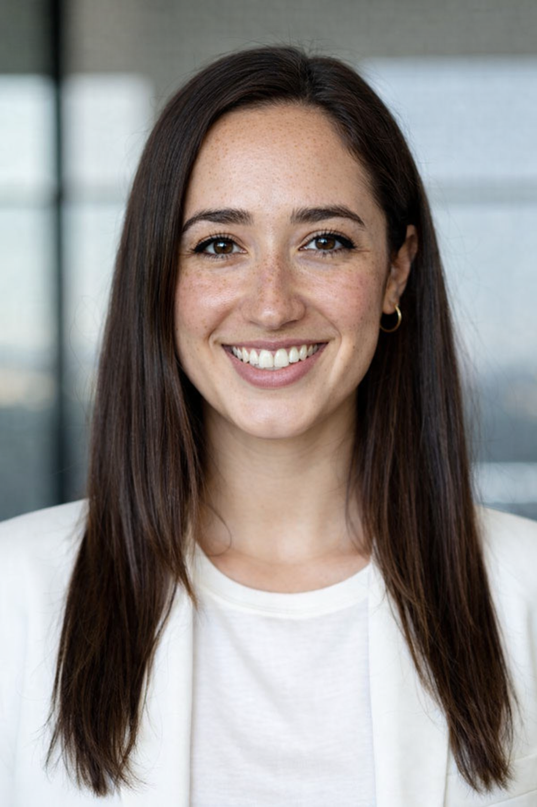
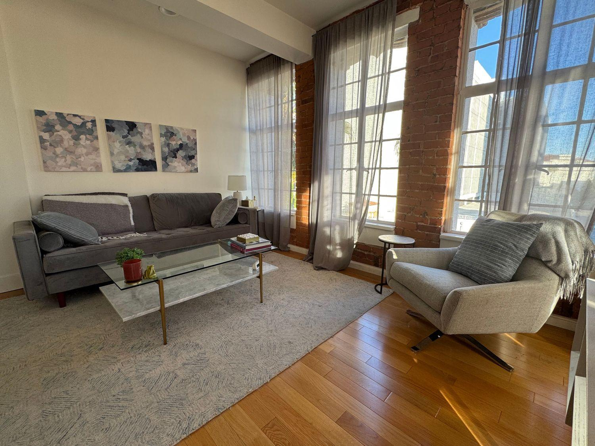
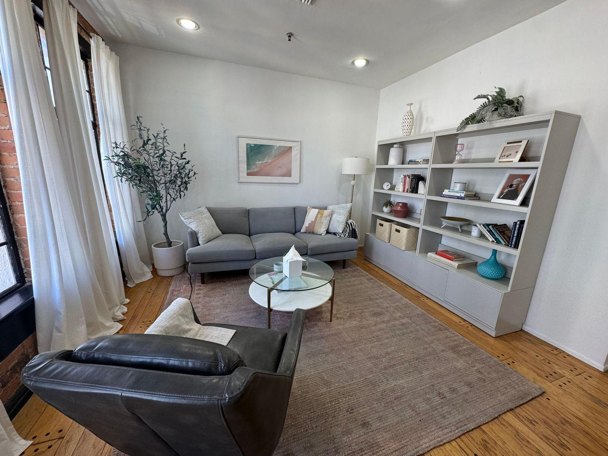

Anxiety & Panic Therapy
Learn more about the worry, tension, and physical feelings that can keep you on edge and find practical ways to manage them.
Explore support →THERAPY IN SANTA MONICA, CALIFORNIA
Dr. Maya Reynolds, PsyD provides warm, collaborative therapy for adults dealing with anxiety, panic, trauma, burnout, and the pressure of a fast-paced life.

Many of Maya’s clients are thoughtful, high-achieving, and self-aware, but still deal with worry, tension, poor sleep, overthinking, or the feeling that something might go wrong.
Therapy can provide time to slow down, understand your patterns, reconnect with yourself, and find healthier ways to manage daily life.
HOW I CAN HELP
Therapy is tailored to your experience, with practical tools and enough space to look at the bigger picture.
Learn more about the worry, tension, and physical feelings that can keep you on edge and find practical ways to manage them.
Explore support →Work through past experiences at a careful pace, with attention to safety, stability, and how those experiences may still affect everyday life.
Explore support →Find more sustainable ways of working and living when pressure, perfectionism, or professional demands have started to take a toll.
Explore support →MEET YOUR THERAPIST
I’m a licensed clinical psychologist based in Santa Monica, California. I work with adults who are dealing with anxiety, stress, or the effects of difficult past experiences.
My work includes cognitive-behavioral therapy (CBT), EMDR, mindfulness-based practices, and body-oriented techniques. These approaches can help look at both the emotional and physical sides of stress.
I believe therapy works best when clients feel respected, understood, and involved in the process. My goal is to help clients build insight, resilience, and a stronger relationship with themselves.
MY APPROACH
Sessions are structured enough to provide support while leaving room for reflection. Trauma work is approached carefully, with safety and stability in mind.
Look at patterns in thoughts, emotions, and behavior while learning practical skills.
An evidence-based approach that can help process experiences that continue to affect the present.
Build awareness of the present moment and create more space around difficult thoughts and feelings.
Pay attention to how stress can show up physically, including tension and feeling constantly on edge.
FOCUS AREAS
People come to therapy with different experiences, but many want to feel calmer, clearer, and more connected to themselves.
OUR OFFICE
Maya’s Santa Monica office is quiet, private, and designed to feel comfortable from the moment you arrive.


QUESTIONS
These answers cover some common questions about the practice.
She works with adults, including professionals, entrepreneurs, and creatives who may be dealing with anxiety, panic, trauma, burnout, perfectionism, or ongoing stress.
Yes. Dr. Reynolds offers in-person therapy from her Santa Monica office and secure telehealth sessions for clients located in California.
Her work includes CBT, EMDR, mindfulness-based practices, and body-oriented techniques.
Trauma work may include single events or longer-term experiences connected to childhood, relationships, or chronic stress. Sessions are paced carefully around safety and stability.
The Santa Monica office is quiet, private, naturally lit, and designed to provide a comfortable setting for therapy.
READY WHEN YOU ARE
If you’re looking for a therapist in Santa Monica who combines practical tools with deeper work, you can take the next step at a pace that feels comfortable.